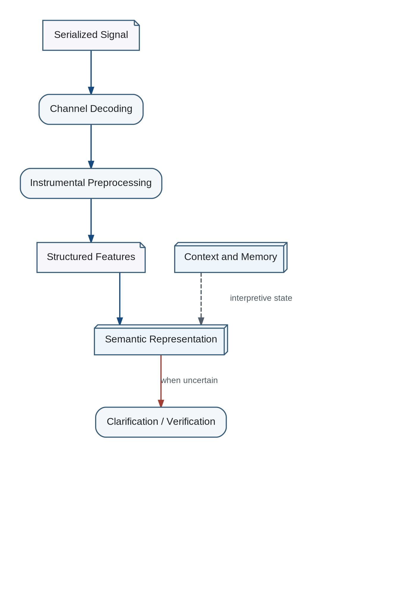

The engineering pipeline separates physical decoding from semantic reconstruction: channel decoding produces symbols or perceptual features; contextual interpretation relates them to active memory; model integration proposes changes to the recipient world model; clarification is requested when ambiguity or conflict remains.
Semantic Reconstruction Pipeline

the earlier analysis does not claim to solve the general problem of deriving meaning from arbitrary serialized signals. It identifies architectural constraints and candidate stages that a future implementation must test.